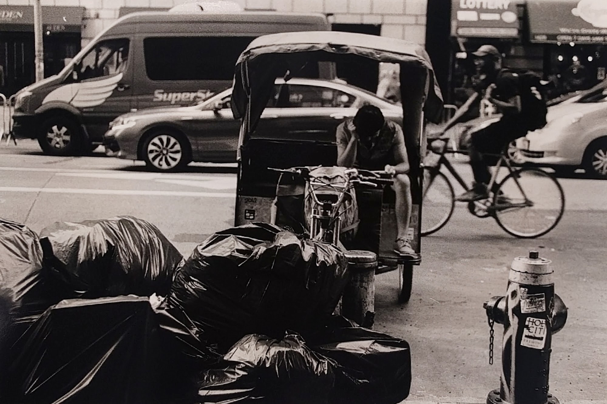

Some of these photos were taken in New York city when I visited it in October for an AI forum. I wanted to take pictures in NYC for so long and felt this was as good a time as any. So, carried my old-ass camera around uptown and midtown manhattan, and took most of the photos.
